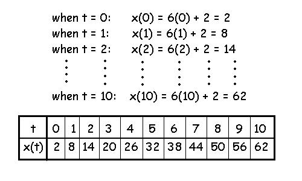
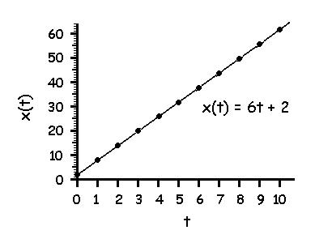

Elementary Calculus
Calculus is a very important tool for the application of biomechanics. This lecture is not a substitute for a college calculus course but it is designed to introduce differential and integral calculus in such a way that it can be applied to aspects of biomechanics (i.e. projectiles) with no prior exposure to calculus. In order to practice biomechanics at the graduate level, at least one course in calculus and another in differential equations should be considered necessary. This lecture begins with a review of functions and the student should already be familiar with slopes and average velocity from the linear kinematics lecture.
Review of Functions
A property is something that characterizes some things but not others. A variable is a set of mutually exclusive properties. Properties on a variable are often called values. For example, muscular strength is a property that characterizes the amount of force that a muscle can exert but does not characterize the muscle's resistance to fatigue. Force would be the variable and strong muscles would have higher values of strength than weak muscles.
A function is the description of one variable in terms of one or more other variables. For example, horizontal displacement (x) is a variable that can be described as a function of time with the following equation: x(t) = 6t + 2
In this course, the descriptions of movement (kinematic variables) will almost always be with respect to time.
Draw a graph of the function x(t) = 6t + 2 from t = 0 to t = 10.
This function tells us that x varies or changes when t varies or changes. If we manipulate t from 0 to 10 and calculate x for each change of t, we can graph the two variables. The variable that we manipulate is called the "independent variable" and the variable we measure is called the "dependent variable". The first step is to create a table that allows t to vary from 0 to 10 and calculates values for x that corespond to each value of t.

The second step is to create the graph using the values in the table. The independent variable (t) is put on the horizontal axis and the dependent variable is put on the vertical axis.
The dots in the graph correspond to the points that we calculated and recorded in the chart above. The solid line is the continuous function that goes through the points.
The beauty of equations is that they perfectly describe the relationship between variables and we will see that an ability to work with these equations will allow us to determine many important facts about human motion.
Average Velocity Revisited:
Let us assume that x is the horizontal position of an object, and t repesents time. Therefore, x(t) is a function that describes how position changes with respect to time. Recall that average velocity is the rate of change of position and can be calculated by dividing the change in position (displacement) by the change in time. This calculation is known as the slope of x(t) between two values of time.
Find the average velocity between t=2 and t=4.
Solution:
x(2) = 6(2) + 2 = 14 and x(4) = 6(4) + 2 = 26
we use the delta sign (Δ) to represent change which is equal to the final value minus the initial value.
Therefore Δx = x(4) - x(2) = 26 - 14 = 12 m and Δt = 4 - 2 = 2 s
average velocity = Δx/Δt = 12/ 2 = 6 m/s
Notice that x(t) = 6t + 2 is an equation of a straight line which means that the slope is the same at each instant in time. This also means that the velocity is 6 m/s at every instant in time.
How do we calculate velocity when the slope is always changing?